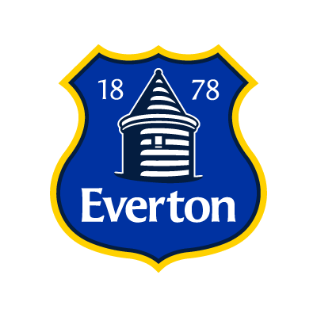
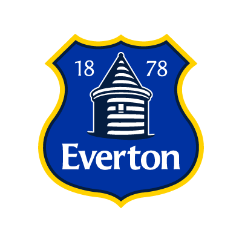
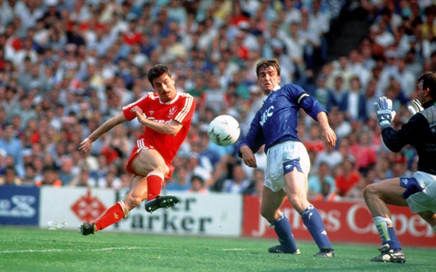
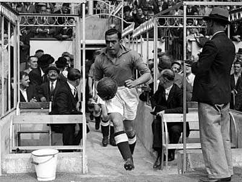
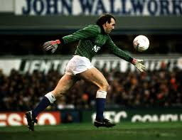
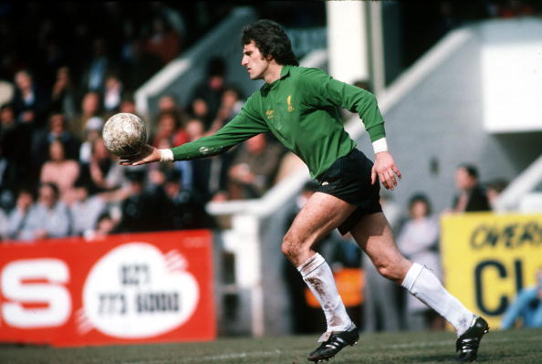

Liverpool
Vs
Everton
Derby Top 10 Scorers

- Ian Rush (Liverpool) - 25 Goals
- Dixie Dean (Everton) - 19 Goals
- Alex Young (Everton) - 12 Goals
- Steven Gerrard (Liverpool) - 10 goals
- Harry Chambers (Liverpool) - 8 goals
- Jimmy Settle (Everton) - 8 goals
- Jack Parkinson (Liverpool) - 8 goals
- Graeme Sharp (Everton) - 7 goals
- Jack Balmer (Liverpool) - 6 goals
- Robbie Fowler (Liverpool) - 6 goals
Derby Top 5 Hat-tricks

- Dixie Dean (Everton) - 2 Hat-tricks (1928/1931)
- Steven Gerrard (Liverpool) - 1 Hat-trick (2012)
- Ian Rush (Liverpool) - 1 Hat-trick (1982)
- Alex Young (Everton) - 1 Hat-trick (1904)
- Fred Howe (Liverpool) - 1 Hat-trick (1935)
Derby Top 5 Overall Appearances

- Neville Southall (Everton) - 41 Appearances
- Ian Rush (Liverpool) - 36 Appearances
- Bruce Grobbelaar (Liverpool) - 34 Appearances
- Alan Hansen (Liverpool) - 33 Appearances
- Kevin Ratcliffe (Everton) - 32 Appearances
Derby Top 5 Overall Clean Sheets

- Ray Clemence (Liverpool) - 15 Clean Sheets in 27 Appearances
- Neville Southall (Everton) - 15 Clean Sheets in 41 Appearances
- Bruce Grobbelaar (Liverpool) - 10 Clean Sheets in 34 Appearances
- Gordon West (Everton) - 9 Clean Sheets in 20 Appearances
- Pepe Reina (Liverpool) - 8 Clean Sheets in 17 Appearances